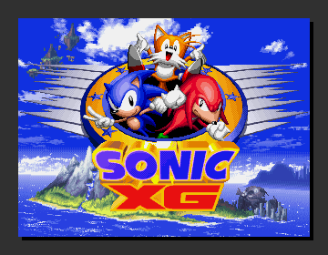
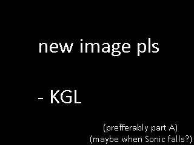
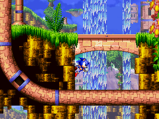
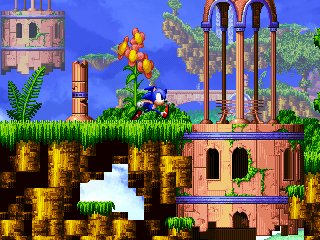

Sonic eXtended Genesis (abbreviated as "Sonic XG") is a Sonic fan project that depicts an alternate take to the Knuckles campaign in Sonic 3 & Knuckles, acting as an epilogue to the Death Egg Saga.
Starting development in 2001 by Euan Gallacher, the project has gone through many iterations and has had involvement most notably from Joseph Waters, who took over the project in 2012, as well as a number of other key figures in the Sonic fan gaming scene of the era. As such, the project has become a pivotal footnote towards 2017's "Sonic Mania".
This iteration of the project is being developed by Fan Circle "ULTRA RING" with blessings and contributions from Euan Gallacher and Joseph Waters, the project's original developers.



